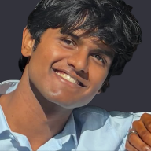

Reconstruction error
Read against the oracle, a perfect noise classifier. It scores 0.104 m, not zero, because rain destroyed 31% of returns that nothing can recover.
Contributors

Siddhant SinghCapstone CPG No. 5 · Thapar Institute, Patiala
Rain corrupts a LiDAR scan two ways at once: droplets create phantom points in mid-air, and attenuation destroys distant returns outright. We built six denoisers, and measured them not by how good the point cloud looks, but by whether a 3D object detector could still find the cars.
Interactive
One held-out test frame, corrupted and then cleaned by each method. Change the rain rate, switch methods, and recolour the cloud to see what each one actually did.
Runs in your browser
These are the real algorithms from the project, reimplemented in JavaScript and recomputed live on 16,000 points as you drag. Scores are measured against the ground-truth noise labels, so you can watch precision trade against recall in real time.
Measured
Geometry over 30 paired observations; detection over 84. Every ranking claim is backed by a Wilcoxon signed-rank test.
Read against the oracle, a perfect noise classifier. It scores 0.104 m, not zero, because rain destroyed 31% of returns that nothing can recover.
The share of recoverable error each method leaves behind. 0% means it matched a perfect classifier.
Fraction of a PointPillars detector's clean-cloud boxes that survive. The detector never saw our noise model.
Precision, recall and F1 against ground-truth labels. The autoencoder scores zero, because it has no removal head at all.
If Chamfer Distance were a good proxy, these points would lie on a tight descending line. Across six methods the rank correlation is only ρ = −0.60 (p = 0.21), and the autoencoder is a catastrophic outlier: better CD than the corrupted input, near-zero detection recall.
Only the three fast methods clear the 10 Hz budget of a real automotive LiDAR.
Methods degrade in parallel rather than crossing over.
What we learned
The DGCNN closes 98.4% of the recoverable error and is the only method statistically indistinguishable from a perfect noise classifier on detection (p = 0.15). Every other method falls significantly short. Nothing beats the oracle.
The PointNet autoencoder improves reconstruction error by 8.9% while destroying 76% of the detector's recall (p < 0.0001). It is the only method worse than doing nothing: it smooths scan-line structure into a surface the detector cannot parse, and the metric rewards it.
A second proof: our buggy patch-recombination scored a better Chamfer Distance while emitting 232% of the input points. The metric is improvable by duplication as well as by blurring.
Moving from a k-NN graph to a 64×2048 range image gave a 40× speedup, 45 ms versus 1,806 ms, with the best noise-removal F1 of any method (0.814). A rotating LiDAR already is a 2-D array; recovering that topology makes convolution possible.
Both learned models predict per-point position corrections. Neither works: mean position error moves 0.0804 m → 0.0783 m, and deleting the head entirely leaves Chamfer Distance unchanged.
This is correct behaviour, not undertraining. Range jitter is zero-mean, so for a single observation the error-minimising prediction is zero. Undoing it needs a surface prior no per-point loss supplies.
Trained on physics-derived pseudo-labels instead of ground truth, the network reached F1 0.491 against pseudo-labels that already scored 0.484 alone, a +1.4% gain. It imitated its supervision rather than surpassing it.
The gap to 0.813 supervised is a direct measurement of what ground-truth labels are worth here.
An earlier version of this work claimed removal was not the ceiling, from 10 detection frames with no significance test. At 84 paired observations the ranking reversed. Seven such defects are documented in the report rather than quietly fixed.
How it works
Real KITTI LiDAR scans, held out by frame so no test scan is ever seen in training. The raw split has no ground-truth 3D boxes, which is why detection is measured by consistency against the detector's own clean-cloud output rather than absolute mAP.
A physics model after LISA: Mie extinction α = 0.003 R0.6 at 905 nm gives two-way transmittance, then droplet backscatter, lost returns, and range jitter. At 25 mm/h it destroys 31% of returns.
Three untrained filters (SOR+ROR, IDSOR, temporal) and three learned models (PointNet-AE, DGCNN, RangeRestoreNet). Intensity matters: real returns median 0.150 against 0.051 for weather noise.
Every method sees the identical corrupted cloud per (frame, seed), so results are paired. Reconstruction, noise-removal F1, retention, downstream detection and latency, because they disagree.
Loading point clouds…